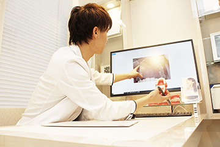

- ホーム
- 矯正治療｜治療の流れ
Ortho Flow矯正治療はこのように進んでいきます
「歯並びが気になっていて、きれいにしたいけれど、どんな治療をするのかわからなくて不安」……そんな方のために、渋谷駅すぐの歯医者「渋谷ルーブル歯科・矯正歯科」での矯正治療の流れをご紹介します。初回の治療相談は無料ですので、まずはお気軽にお問い合わせください。
渋谷ルーブル歯科・矯正歯科の矯正治療の流れ
STEP1 カウンセリング予約
ご自身の歯並びはもちろん、お子様の歯並びが気になる方は、まずはお気軽にご相談ください。矯正治療についての不安や質問にお答えしますので、無料カウンセリングをご予約ください。24時間いつでも送信できるメールフォーム、または診療時間内のお電話（03-6455-2383）にてご予約いただけます。
STEP2 ご来院
ようこそ、渋谷ルーブル歯科・矯正歯科へ。受付でスタッフが笑顔でお迎えします。まずは問診票のご記入をお願いします。そして健康保険証をご提示ください。
STEP3 カウンセリング（無料）

患者様のお口のお悩みやご要望、ご希望の治療期間など詳しくお聞かせください。治療の不安や疑問も遠慮なくおたずねください。丁寧にわかりやすいご説明を心がけます。所要時間は30分ほどです。
STEP4 精密検査（30,000円税抜価格）
口腔内の状態を把握するための検査をおこないます。正確な診断のために、精密検査は欠かせません。口腔内の写真撮影、レントゲン撮影、歯型の採取などによりお口の状態を確認します。所要時間は15分ほどで、検査結果が出るには2日ほどかかります。
STEP5 診断・検査結果のご説明

精密検査の結果は2日後に出ますので、カウンセリングで伺った患者様のご要望をふまえて治療方針をご提案します。治療の選択肢やそれぞれの治療法のメリット・デメリット、治療期間や費用などについてもご説明します。ご不明点がありましたら、遠慮なくおたずねください。
精密検査で、虫歯や歯周病などのトラブルが発見された場合には、お口全体の健康のためにまずそちらの治療を優先するプランをご提案します。当院では一般歯科もご提供しますので、まず他院で治療をしなければならないようなわずらわしさがなく安心です。
STEP6 治療へのご同意
治療プランにご納得いただけましたら、ご同意をいただき、1週間後から治療開始です。もし、治療内容の検討を重ねたい場合にはお申し出ください。ご同意なく、無理に治療を進めることはありませんのでご安心ください。
STEP7 矯正治療スタート
治療プランに沿って治療を開始します。治療内容や装置の種類によって、装置を2～4回に分けて装着するために続けて通院していただくこともあります。それも治療プランに沿っておこないますのでご安心ください。
STEP8 定期治療・メンテナンス
矯正歯科治療の期間は早くて1年、長いと2年半ほどかかります。歯を動かすために通常の矯正装置は月に1回、マウスピースを使った矯正システムの場合は2～3ヶ月に1回通院していただきます。そして歯やお口の状態をチェックし、装置の調整や交換をおこなうのです。1回の診療時間はだいたい30～60分です。
ワイヤーを使った矯正システムなどは虫歯予防のための丁寧な口腔ケアが欠かせません。定期的な通院の際に、口腔ケアのプロフェッショナルの歯科衛生士がお口の中をチェックし、さらに歯のクリーニングをおこない、必要に応じてブラッシング指導やフッ素塗布もおこないます。
STEP9 矯正装置の除去（リムーブ）
歯が理想の位置まで移動しましたら、矯正装置を取り外します。歯のクリーニングなどの口腔ケアをおこなったあと、口腔内写真の撮影をして、矯正治療の前後の歯並びや噛み合わせの変化をご覧いただきます。
STEP10 保定
矯正装置を除去すると歯は元の位置に戻ろうとします。歯が安定するまで、取り外し可能な保定装置（リテーナー）を装着していただきます。
STEP11 定期検診
保定期間が終了しましたら、矯正治療終了です。歯並びや噛み合わせが整った健康なお口を保っていただくために、当院では定期検診をご提案します。虫歯や歯周病などのお口のトラブル予防と早期発見・早期治療につなげられます。
矯正治療について